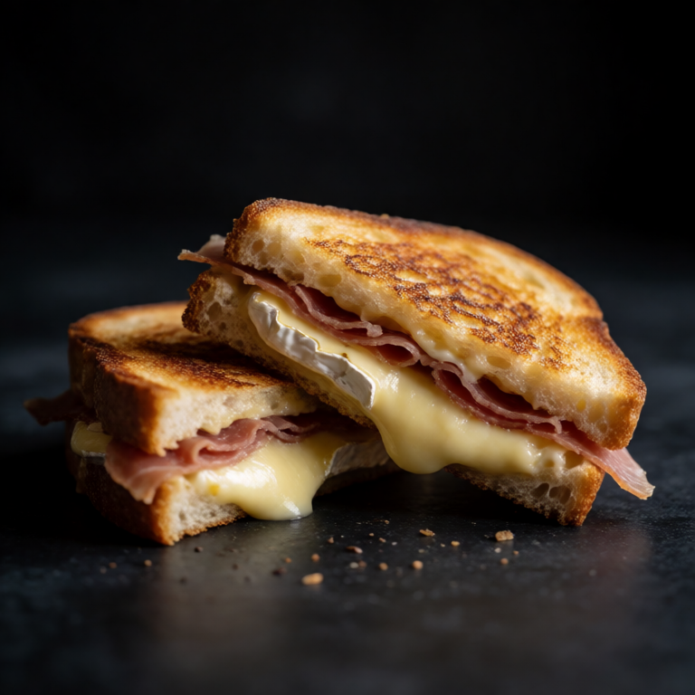
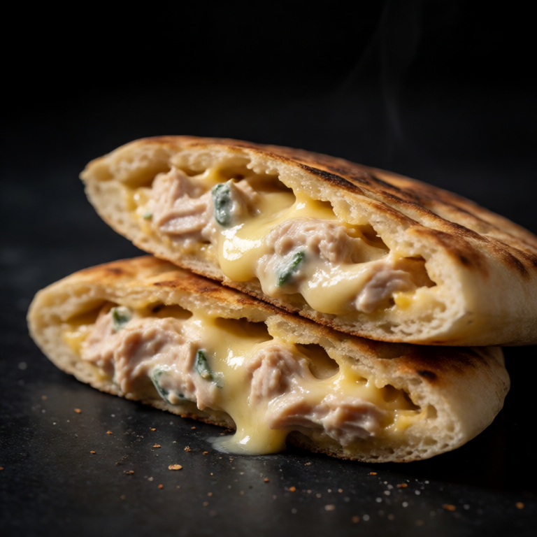

Russian style cottage cheese pancakes. Crispy on the outside, creamy inside.
At a Glance
Prep
10m
Cook
10m
Serves
1
Difficulty
Mid
Rate this slopBe the first to rate it.
Ingredients
Method
- 01
Mix
In a bowl, mix cottage cheese, egg, flour, sugar, and vanilla until a sticky dough forms.
- 02
Fry
Heat butter in a pan. Scoop spoonfuls of the dough into the pan. Flatten slightly. Cook for 2-3 minutes per side until golden.
- 03
Serve
Serve the pancakes hot, with sour cream and jam spooned alongside rather than over the crisp surfaces. Add a small pinch of salt if using a very sweet jam.
Slop Notes
These are called syrniki. They are a staple Russian breakfast or dessert.
Recipe by foidslop · How we create our recipes
The Weekly Slop
Seven dinners for one, one short note, every Sunday. No life story.
One email every Sunday. Unsubscribe whenever. Double opt-in. See the privacy policy.
Keep eating
Related recipes

